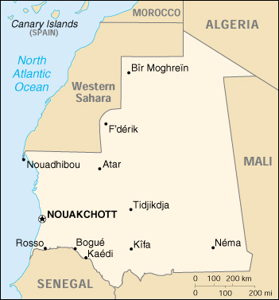

|
Mauritania | |
| Introduction Geography People Government Economy Communications Transportation Military Transnational Issues | ||
|  | ||
| Mauritania | Introduction | Top of Page |
| Background: | Independent from France in 1960, Mauritania annexed the southern third of the former Spanish Sahara (now Western Sahara) in 1976, but relinquished it after three years of raids by the Polisario guerrilla front seeking independence for the territory. Opposition parties were legalized and a new constitution approved in 1991. Two multiparty presidential elections since then were widely seen as being flawed; Mauritania remains, in reality, a one-party state. The country continues to experience ethnic tensions between its black minority population and the dominant Maur (Arab-Berber) populace. |
| Mauritania | Geography | Top of Page |
| Location: | Northern Africa, bordering the North Atlantic Ocean, between Senegal and Western Sahara |
| Geographic coordinates: | 20 00 N, 12 00 W |
| Map references: | Africa |
| Area: |
total:
1,030,700 sq km
land: 1,030,400 sq km water: 300 sq km |
| Area - comparative: | slightly larger than three times the size of New Mexico |
| Land boundaries: |
total:
5,074 km
border countries: Algeria 463 km, Mali 2,237 km, Senegal 813 km, Western Sahara 1,561 km |
| Coastline: | 754 km |
| Maritime claims: |
contiguous zone:
24 NM
continental shelf: 200 NM or to the edge of the continental margin exclusive economic zone: 200 NM territorial sea: 12 NM |
| Climate: | desert; constantly hot, dry, dusty |
| Terrain: | mostly barren, flat plains of the Sahara; some central hills |
| Elevation extremes: |
lowest point:
Sebkha de Ndrhamcha -3 m
highest point: Kediet Ijill 910 m |
| Natural resources: | iron ore, gypsum, fish, copper, phosphate, diamonds, gold |
| Land use: |
arable land:
0%
permanent crops: 0% permanent pastures: 38% forests and woodland: 4% other: 58% (1993 est.) |
| Irrigated land: | 490 sq km (1993 est.) |
| Natural hazards: | hot, dry, dust/sand-laden sirocco wind blows primarily in March and April; periodic droughts |
| Environment - current issues: | overgrazing, deforestation, and soil erosion aggravated by drought are contributing to desertification; very limited natural fresh water resources away from the Senegal which is the only perennial river |
| Environment - international agreements: |
party to:
Biodiversity, Climate Change, Desertification, Endangered Species, Hazardous Wastes, Law of the Sea, Nuclear Test Ban, Ozone Layer Protection, Ship Pollution, Wetlands
signed, but not ratified: none of the selected agreements |
| Geography - note: | most of the population concentrated in the cities of Nouakchott and Nouadhibou and along the Senegal River in the southern part of the country |
| Mauritania | People | Top of Page |
| Population: | 2,747,312 (July 2001 est.) |
| Age structure: |
0-14 years:
46.14% (male 634,940; female 632,654)
15-64 years: 51.59% (male 698,433; female 718,883) 65 years and over: 2.27% (male 25,840; female 36,562) (2001 est.) |
| Population growth rate: | 2.93% (2001 est.) |
| Birth rate: | 42.95 births/1,000 population (2001 est.) |
| Death rate: | 13.65 deaths/1,000 population (2001 est.) |
| Net migration rate: | 0 migrant(s)/1,000 population (2001 est.) |
| Sex ratio: |
at birth:
1.03 male(s)/female
under 15 years: 1 male(s)/female 15-64 years: 0.97 male(s)/female 65 years and over: 0.71 male(s)/female total population: 0.98 male(s)/female (2001 est.) |
| Infant mortality rate: | 76.7 deaths/1,000 live births (2001 est.) |
| Life expectancy at birth: |
total population:
51.14 years
male: 49.06 years female: 53.29 years (2001 est.) |
| Total fertility rate: | 6.22 children born/woman (2001 est.) |
| HIV/AIDS - adult prevalence rate: | 1.8% (2000 est.) |
| HIV/AIDS - people living with HIV/AIDS: | 6,600 (1999 est.) |
| HIV/AIDS - deaths: | 610 (1999 est.) |
| Nationality: |
noun:
Mauritanian(s)
adjective: Mauritanian |
| Ethnic groups: | mixed Maur/black 40%, Maur 30%, black 30% |
| Religions: | Muslim 100% |
| Languages: | Hasaniya Arabic (official), Pular, Soninke, Wolof (official), French |
| Literacy: |
definition:
age 15 and over can read and write
total population: 46.7% male: 53.4% female: 40% (1998 est.) |
| Mauritania | Government | Top of Page |
| Country name: |
conventional long form:
Islamic Republic of Mauritania
conventional short form: Mauritania local long form: Al Jumhuriyah al Islamiyah al Muritaniyah local short form: Muritaniyah |
| Government type: | republic |
| Capital: | Nouakchott |
| Administrative divisions: | 12 regions (regions, singular - region) and 1 capital district*; Adrar, Assaba, Brakna, Dakhlet Nouadhibou, Gorgol, Guidimaka, Hodh Ech Chargui, Hodh El Gharbi, Inchiri, Nouakchott*, Tagant, Tiris Zemmour, Trarza |
| Independence: | 28 November 1960 (from France) |
| National holiday: | Independence Day, 28 November (1960) |
| Constitution: | 12 July 1991 |
| Legal system: | a combination of Shari'a (Islamic law) and French civil law |
| Suffrage: | 18 years of age; universal |
| Executive branch: |
chief of state:
President Col. Maaouya Ould Sid Ahmed TAYA (since 12 December 1984)
head of government: Prime Minister Cheik El Avia Ould Mohamed KHOUNA (since 17 November 1998) cabinet: Council of Ministers elections: president elected by popular vote for a six-year term; election last held 12 December 1997 (next to be held NA December 2003); prime minister appointed by the president election results: President Col. Maaouya Ould Sid Ahmed TAYA reelected with 90.9% of the vote |
| Legislative branch: |
bicameral legislature consists of the Senate or Majlis al-Shuyukh (56 seats; 17 up for election every two years; members elected by municipal leaders to serve six-year terms) and the National Assembly or Majlis al-Watani (79 seats; members elected by popular vote to serve five-year terms)
elections: Senate - last held 17 April 1998 (next to be held NA 2001); National Assembly - last held 11 and 18 October 1996 (next to be held NA 2001) election results: Senate - percent of vote by party - NA%; seats by party - NA; National Assembly - percent of vote by party - NA%; seats by party - PRDS 71, AC 1, independents and other 7 |
| Judicial branch: | Supreme Court or Cour Supreme; Court of Appeals; lower courts |
| Political parties and leaders: |
Action for Change or AC [Messoud Ould BOULKHEIR]; Assembly for Democracy and Unity or RDU [Ahmed Ould SIDI BABA]; Democratic and Social Republican Party or PRDS (ruling party) [President Col. Maaouya Ould Sid Ahmed TAYA]; Mauritanian Party for Renewal and Concorde or PMRC [Molaye El Hassen Ould JIYID]; National Union for Democracy and Development or UNDD [Tidjane KOITA]; Party for Liberty, Equality and Justice or PLEJ [Daouda M'BAGNIGA]; Popular Front or FP [Ch'bih Ould CHEIKH MALAININE]; Popular Progress Alliance or APP [Mohamed El Hafed Ould ISMAEL]; Popular Social and Democratic Union or UPSD [Mohamed Mahmoud Ould MAH]; Progress Force Union or UFP [Mohamed Ould MOLOUD]; Union for Progress and Democracy or UNDD [Naha Mint MOUKNASS]
note: parties legalized by constitution ratified 12 July 1991; however, politics continue to be tribally based |
| Political pressure groups and leaders: | Arab nationalists; Ba'athists; General Confederation of Mauritanian Workers or CGTM [Abdallahi Ould MOHAMED, secretary general]; Independent Confederation of Mauritanian Workers or CLTM [Samory Ould BEYE]; Islamists; Mauritanian Workers Union or UTM [Mohamed Ely Ould BRAHIM, secretary general] |
| International organization participation: | ABEDA, ACCT (associate), ACP, AfDB, AFESD, AL, AMF, AMU, CAEU, CCC, ECA, ECOWAS, FAO, G-77, IBRD, ICAO, ICFTU, ICRM, IDA, IDB, IFAD, IFC, IFRCS, IHO (pending member), ILO, IMF, IMO, Intelsat, Interpol, IOC, ITU, NAM, OAU, OIC, OPCW, UN, UNCTAD, UNESCO, UNIDO, UPU, WCL, WHO, WIPO, WMO, WToO, WTrO |
| Diplomatic representation in the US: |
chief of mission:
Ambassador Ahmed Ben Khalifa BEN JIDOU
chancery: 2129 Leroy Place NW, Washington, DC 20008 telephone: [1] (202) 232-5700 FAX: [1] (202) 319-2623 |
| Diplomatic representation from the US: |
chief of mission:
Ambassador John W. LIMBERT
embassy: Rue Abdallaye, Nouakchott mailing address: B. P. 222, Nouakchott telephone: [222] 25-26-60, 25-26-63 FAX: [222] 25-15-92 |
| Flag description: | green with a yellow five-pointed star above a yellow, horizontal crescent; the closed side of the crescent is down; the crescent, star, and color green are traditional symbols of Islam |
| Mauritania | Economy | Top of Page |
| Economy - overview: | A majority of the population still depends on agriculture and livestock for a livelihood, even though most of the nomads and many subsistence farmers were forced into the cities by recurrent droughts in the 1970s and 1980s. Mauritania has extensive deposits of iron ore, which account for half of total exports. The decline in world demand for this ore, however, has led to cutbacks in production. The nation's coastal waters are among the richest fishing areas in the world, but overexploitation by foreigners threatens this key source of revenue. The country's first deepwater port opened near Nouakchott in 1986. In the past, drought and economic mismanagement have resulted in a buildup of foreign debt. In March 1999, the government signed an agreement with a joint World Bank-IMF mission on a $54 million enhanced structural adjustment facility (ESAF). Mauritania withdrew its membership in the Economic Community of West African States (ECOWAS) in 2000. Privatization and debt relief are in full swing, and the rate of economic growth appears to be accelerating, especially in the construction, telecommunication, and information sectors. Diamonds and petroleum are beginning to be explored and exploited. |
| GDP: | purchasing power parity - $5.4 billion (2000 est.) |
| GDP - real growth rate: | 5% (2000 est.) |
| GDP - per capita: | purchasing power parity - $2,000 (2000 est.) |
| GDP - composition by sector: |
agriculture:
25%
industry: 31% services: 44% (1997) |
| Population below poverty line: | 50% (1996 est.) |
| Household income or consumption by percentage share: |
lowest 10%:
2.3%
highest 10%: 29.9% (1995) |
| Inflation rate (consumer prices): | 4.5% (2000 est.) |
| Labor force: | 750,000 (1999) |
| Labor force - by occupation: | agriculture 47%, services 39%, industry 14% |
| Unemployment rate: | 23% (1995 est.) |
| Budget: |
revenues:
$329 million
expenditures: $265 million, including capital expenditures of $75 million (1996 est.) |
| Industries: | fish processing, mining of iron ore and gypsum |
| Industrial production growth rate: | 2.2% (1999) |
| Electricity - production: | 151 million kWh (1999) |
| Electricity - production by source: |
fossil fuel:
82.78%
hydro: 17.22% nuclear: 0% other: 0% (1999) |
| Electricity - consumption: | 140.4 million kWh (1999) |
| Electricity - exports: | 0 kWh (1999) |
| Electricity - imports: | 0 kWh (1999) |
| Agriculture - products: | dates, millet, sorghum, rice, corn, dates; cattle, sheep |
| Exports: | $333 million (f.o.b., 1999) |
| Exports - commodities: | iron ore, fish and fish products, gold |
| Exports - partners: | Japan 18%, France 17%, Italy 16%, Spain 11% (1998) |
| Imports: | $305 million (f.o.b., 1999) |
| Imports - commodities: | machinery and equipment, petroleum products, capital goods, foodstuffs, consumer goods |
| Imports - partners: | France 27%, Benelux 9%, Germany 7%, Spain 7% (1998) |
| Debt - external: | $2.1 billion (1999) |
| Economic aid - recipient: | $300 million (1998) |
| Currency: | ouguiya (MRO) |
| Currency code: | MRO |
| Exchange rates: | ouguiyas per US dollar - 250.870 (December 2000), 238.923 (2000), 209.514 (1999), 188.476 (1998), 151.853 (1997), 137.222 (1996) |
| Fiscal year: | calendar year |
| Mauritania | Communications | Top of Page |
| Telephones - main lines in use: | 26,000 (2000) |
| Telephones - mobile cellular: | NA |
| Telephone system: |
general assessment:
limited system of cable and open-wire lines, minor microwave radio relay links, and radiotelephone communications stations (improvements being made)
domestic: mostly cable and open-wire lines; a recently completed domestic satellite telecommunications system links Nouakchott with regional capitals international: satellite earth stations - 1 Intelsat (Atlantic Ocean) and 2 Arabsat |
| Radio broadcast stations: | AM 1, FM 2, shortwave 1 (1998) |
| Radios: | 360,000 (1997) |
| Television broadcast stations: | 1 (1997) |
| Televisions: | 87,000 (1998) |
| Internet country code: | .mr |
| Internet Service Providers (ISPs): | 5 (2000) |
| Internet users: | 3,500 (2000) |
| Mauritania | Transportation | Top of Page |
| Railways: |
total:
750 km (single track); note - owned and operated by government mining company
standard gauge: 750 km 1.435-m gauge (1995) |
| Highways: |
total:
7,660 km
paved: 866 km unpaved: 6,794 km (1996) |
| Waterways: | note: ferry traffic on the Senegal River |
| Ports and harbors: | Bogue, Kaedi, Nouadhibou, Nouakchott, Rosso |
| Merchant marine: | none (2000 est.) |
| Airports: | 26 (2000 est.) |
| Airports - with paved runways: |
total:
8
2,438 to 3,047 m: 3 1,524 to 2,437 m: 5 (2000 est.) |
| Airports - with unpaved runways: |
total:
18
2,438 to 3,047 m: 2 1,524 to 2,437 m: 4 914 to 1,523 m: 9 under 914 m: 3 (2000 est.) |
| Mauritania | Military | Top of Page |
| Military branches: | Army, Navy, Air Force, National Gendarmerie, National Guard, National Police, Presidential Guard |
| Military manpower - availability: | males age 15-49: 624,375 (2001 est.) |
| Military manpower - fit for military service: | males age 15-49: 302,699 (2001 est.) |
| Military expenditures - dollar figure: | $41 million (FY97/98) |
| Military expenditures - percent of GDP: | 2.7% (FY97/98) |
| Mauritania | Transnational Issues | Top of Page |
| Disputes - international: | none |
{kind=link}
{kind=link}